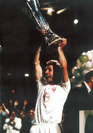

HISTORIAS DE GRANDES CLUBES
LEVERKUSEN
LEVERKUSEN

 Em 27 de novembro de 1903, Wilhelm Hauschild escreveu uma carta - assinada por 170 de seus colegas de trabalho - para seu empregador, a Friedrich Bayer and Co., buscando o apoio da empresa na criação de um clube esportivo. A empresa concordou em apoiar a iniciativa e, em 1º de julho de 1904, foi fundada o Turn- und Spielverein Bayer 04 Leverkusen. Em 31 de maio de 1907, um departamento de futebol foi formado dentro do clube. Na cultura do esporte na Alemanha na época, havia animosidade significativa entre ginastas e outros tipos de atletas. Tal fato acabou por contribuir para uma divisão dentro do clube: em 8 de junho de 1928, os futebolistas formaram uma associação separada - Sportvereinigung Bayer 04 Leverkusen - que também incluiu os jogadores de handebol e faustebol além dos atletas do atletismo e do boxe, enquanto os ginastas continuaram no TuS Bayer 04 Leverkusen. O SV Bayer 04 Leverkusen levou consigo as cores tradicionais do clube, vermelho e preto, com as ginastas a adotar o azul e o amarelo. Durante este período, e nos anos 1930, o SV Bayer 04 Leverkusen jogou na terceira e quarta divisão da Alemanha. Em 1936, eles ganharam a promoção para a segunda maior divisão do período. Esse também foi o ano em que o clube usou o familiar "Bayer" pela primeira vez. Eles fizeram sua primeira aparição em um jogo de uma liga do topo em 1951, jogando na Oberliga West.[4] Eles jogaram nessa divisão até 1956, quando foram rebaixados. O SV Bayer 04 Leverkusen não regressaria às ligas superiores até 1962, apenas uma época antes da formação da nova liga profissional alemã, a Bundesliga. No ano seguinte, eles participaram da Regionalliga West, uma liga de nível II, onde suas atuações nas próximas temporadas os deixaram bem abaixo da tabela classificativa.